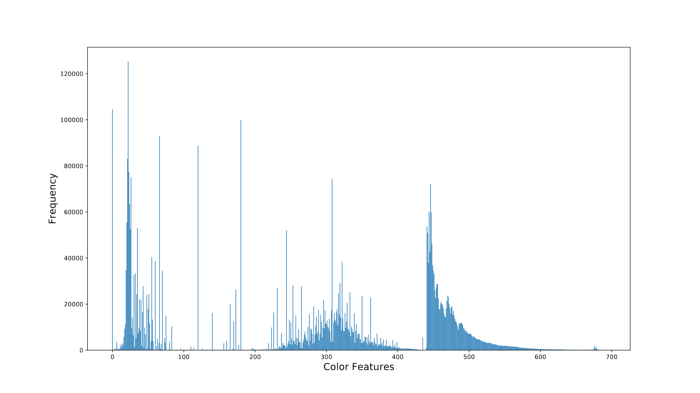
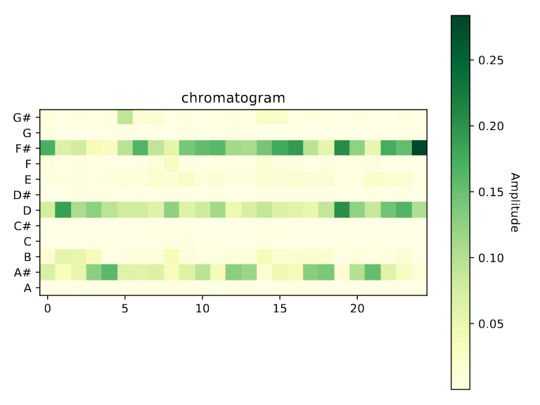

A Content-based Movie Recommender System
Introduction
I built a content-based movie recommender system. The system only utilizing the content of movies themselves, which solves the cold-start problem. The challenge is how to extract meaningful information from the movies?
Movie Trailers
Movie trailers are epitomes of movies. From a movie trailer, audience can have a general idea of the style of the movie. For example, a criminal movie usually have dim colors, while a comedy are full of laughters. How can we quantify them?
Image Processing
Below is a screenshot of one my favourite movie
The Dark Knight's trailer. As is know to all who familiar with video processing, a video is consist of numerous frames, and each frame is an image. An colorful image is a matrix, each cell of which is a color, representing as RGB.
If we separate the RGB of a image, a frame with a single dimension of color looks like the following three pictures.
A image can also be quantized in another color space, which is HSV (Hue, Saturation, Value). The HSV color space displays more closely towards what human's vision perceive colors.
Whichever way we represent it, we can collect statistics from the images. Usually, one second of video is consist of 18 or 24 frames, depending on the fps(frame per second) of the video. Generally, there won't be significant change in frames in a second. Therefore, I sample frames from the videos, one frame for each second.
After collectin the frames, I plotted the color histogram of the frames. In further analysis, I divided the histogram into four bins. The data in color histograms can be used as features for the recommender system.

Audio Processing
What about sound? How can we take sound of the trailers into account. Well, according to a blog, I figured out that sound features can be capatured by dividing different amplitude into various levels.

Social Network Analysis
If two movies have overlapping in crew members, then I defined them have a connection to each other.